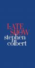
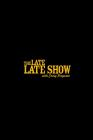
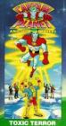
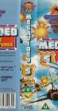
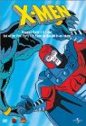

Next Unwatched Episode Per Series
Most Recent Episode Watched Per Series


You're David Letterman, You Idiot (2018) Airs on 2018-05-08
S1 - E0 of My Next Guest Needs No Introduction With David Letterman
S1 - E0 of My Next Guest Needs No Introduction With David Letterman



George Clooney, Jeb Bush, Jon Batiste & Stay Human (2015) Airs on 2015-09-08
S1 - E1 of The Late Show with Stephen Colbert
S1 - E1 of The Late Show with Stephen Colbert


The Triumph of the Green Goblin (1981) Airs on 1981-09-12
S1 - E1 of Spider-Man and His Amazing Friends
S1 - E1 of Spider-Man and His Amazing Friends



David Duchovny / Nicole Sullivan (2005) Airs on 2005-01-03
S1 - E1 of The Late Late Show with Craig Ferguson
S1 - E1 of The Late Late Show with Craig Ferguson


Maria Bamford, Nick Kroll (as Fabrice Fabrice), Greg Fitzsimmons, and Eugene Mirman (2010) Airs on 2010-01-08
S1 - E1 of John Oliver's New York Stand-Up Show
S1 - E1 of John Oliver's New York Stand-Up Show


Cubicle Boss, Pimp Pun Disaster, Whiskey Super Size (2007) Airs on 2007-03-27
S1 - E3 of The Whitest Kids U Know
S1 - E3 of The Whitest Kids U Know


The Ship Resting in Yunzabit! Time to Blast Off for Planet Namek! (2009) Airs on 2009-08-09
S1 - E18 of Dragon Ball Z Kai
S1 - E18 of Dragon Ball Z Kai


George Carlin with Janis Ian and Billy Preston (1975) Airs on 1975-10-11
S1 - E1 of Saturday Night Live
S1 - E1 of Saturday Night Live





A Relatively Leisurely Day in the Life of a Fleet Captain Airs on 2006-05-26
S3 - E14 of Full Metal Panic!
S3 - E14 of Full Metal Panic!





